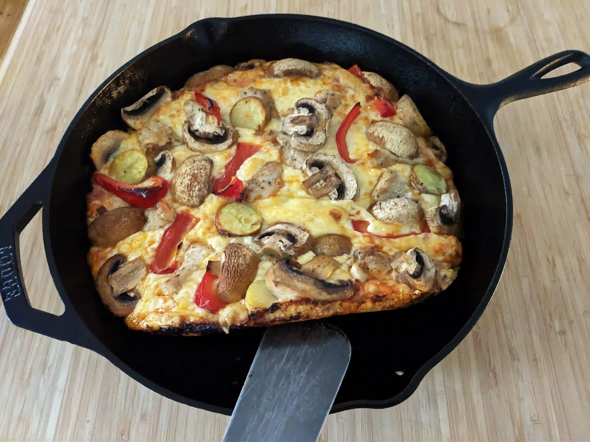

Pan pizza

Description
This is a simple recipe for a pan pizza, highly customizable and easy to make.
Ingredients
- no-knead pizza dough
- pizza sauce
- cheese
- olive oil
- pepperoni (optional)
- mushrooms (optional)
- pineapple (optional)
- …really whatever you like (optional)
Steps
- Mix dry ingredients in a bowl.
- Mix in olive oil and water. No need for hands or kneading!
- Cover bowl air tight, and let it sit in room temperature for at least 7 hours, and up to 24 hours. It should have dramatically increased in size.
- The dough can be kept in the refrigerator for some days, so feel free to double/triple the ingredients for more pizzas for the same amount of work and time.
This recipe is courtesy of brox from based.cooking website
Home